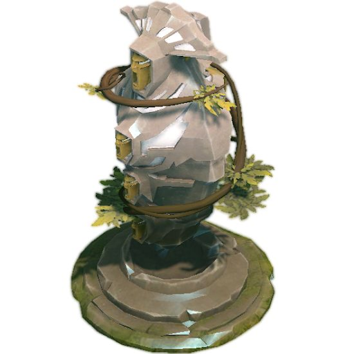
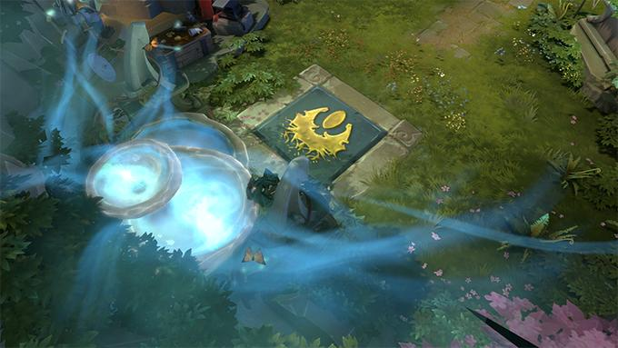

БАШНИ
Башни. Стоят на всех линиях и базах команд, наносят урон крипам и противникам. Делятся на категории (от Т1 до Т4). Чтобы уничтожить следующий тир, нужно разобраться с предыдущим.

ФОНТАН
Здесь спавнятся герои, приобретаются артефакты. Располагается в дальних краях карты. Противники здесь получают мгновенный дамаг, а союзники быстро исцеляются и бафают ману.